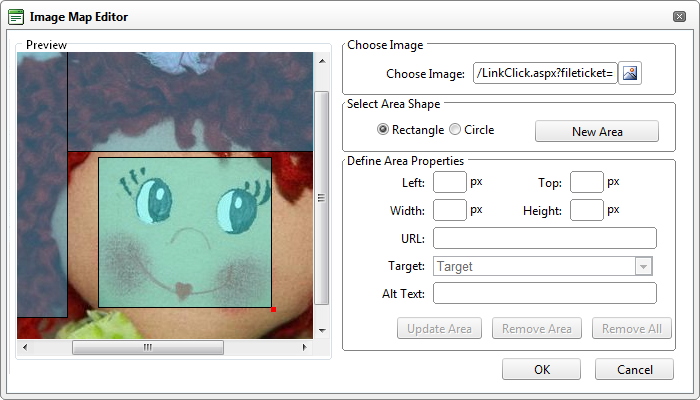

Creating an Image Map
How to create an image map using the DotNetNuke.RadEditorProvider for the RTE.
- Insert an image.
- Right-click on the image and then select Image Map Editor from the drop down list - OR - Click the Insert Media
 button and then select Image Map Editor from the actions toolbar. This will open the Image Map Editor.
button and then select Image Map Editor from the actions toolbar. This will open the Image Map Editor.
- To create an area:
- At Select Area Shape, select either Rectangle or Circle.
- Click the New Area button. This displays a gray box defining the area.
- Move and resize the area as required. This updates the Define Area Properties fields for Left, Width, Top and Height.
- Optional. In the URL text box, enter the URL to open when a user clicks on this Area.
- At Target, select the target for the URL from these options:
- Target: No target is set and the link will open in the same window.
- New Window: Will open a new window.
- Parent Window: If web page consists of frames, the link will open in the parent frame.
- Same Window: The link will open in the same window.
- Browser Window: The link will open in the same window.
- Search Pane
- Media Pane
- In the Alt Text text box, enter the text to be displayed for this area.
- Click the Update Area button.
- Repeat Step 3 to add additional areas.
- These additional editing options are available:
- To edit an existing area, click on it in the preview window, edit the properties as required and then click the Update Area button.
- To remove an area, click the Remove Area button.
- To remove all areas, click the Remove All button.
-
Click the OK button confirm.

Creating an Image Map